Vamos instalar sua imagem do Windows em alguns computadores, certo?
Acelerando o processo de instalação
Um dos requisitos é que todos os computadores tenham uma conta local chamada "John Doe". Outro requisito é pular o máximo de perguntas possível na OOBE. Tudo isso pode ser completamente automatizado com um arquivo de resposta desatendido. Para começar a criá-los, você pode usar o assistente de criação. Para acessá-lo, vá em Ferramentas e clique em Criador de arquivo de resposta desatendido.
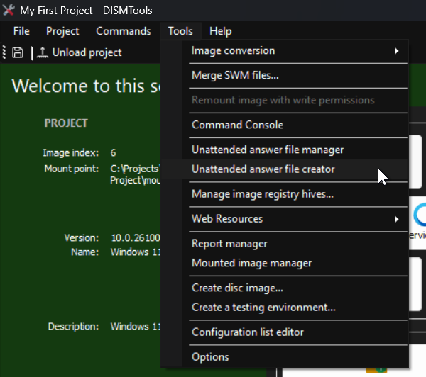Nota:
Você pode ver o seguinte diálogo ao iniciar esta tarefa:
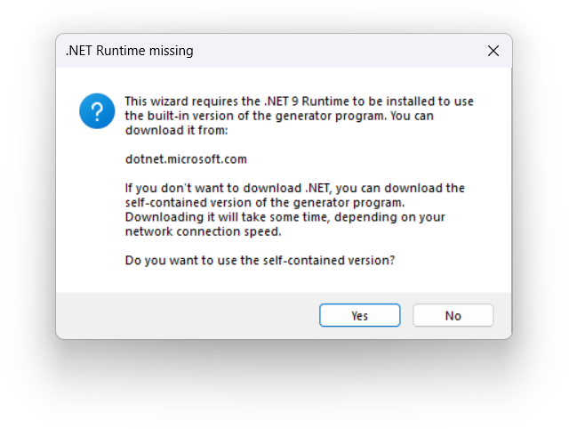Isso pode ocorrer se você não tiver o runtime de área de trabalho .NET 9, que é um requisito para o programa gerador de arquivos de resposta subjacente. Você pode proceder de 2 maneiras: baixando o Runtime Desktop do .NET 9, ou deixando que o DISMTools faça o download da versão autossuficiente após clicar em Sim.
Observe também que o requisito do runtime .NET pode mudar no futuro, caso o componente subjacente passe a usar uma versão diferente.
Depois, você pode seguir os passos do assistente. Eventualmente, você terá um arquivo de resposta desatendido e chegará a esta tela:
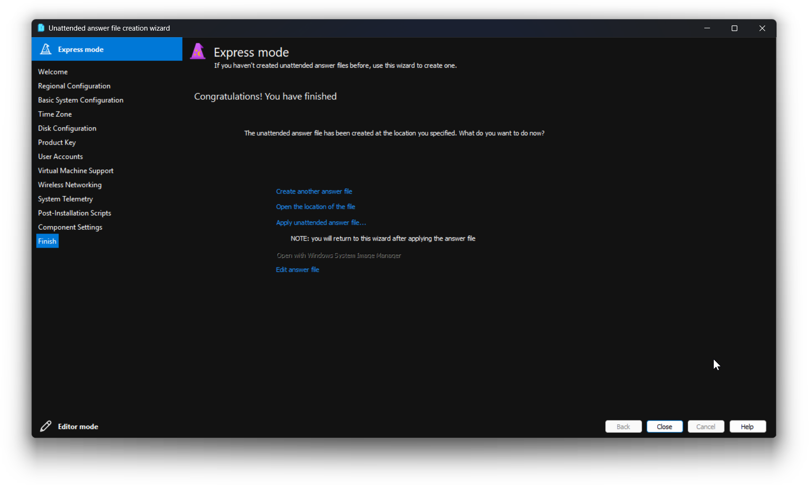Nesta tela você pode realizar mais tarefas com o assistente, como criar outro arquivo de resposta ou abrir sua localização. A tarefa que nos interessa realizar é aplicar o arquivo de resposta. Clique no terceiro link e depois em OK neste diálogo:
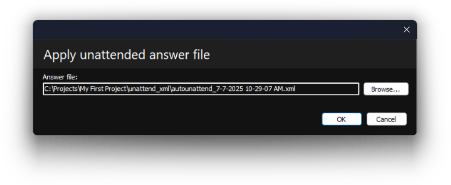Por fim, salve suas alterações. Agora, vamos criar o arquivo ISO.
Criando o arquivo ISO
Para iniciar a criação do ISO, vá em Ferramentas e clique em Criar imagem de disco...
Nota:
Esta tarefa requer o Windows Assessment and Deployment Kit (ADK). Se o DISMTools não conseguir detectá-lo, você terá a opção de baixar e instalar automaticamente a versão mais recente.
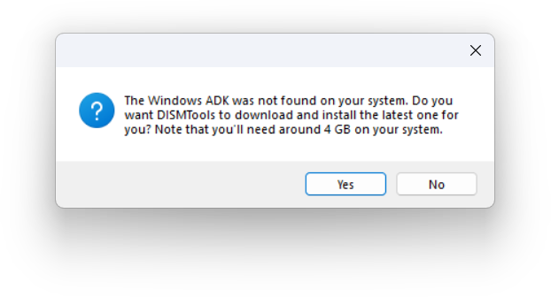Isso pode demorar um pouco, durante o qual você verá algumas informações de progresso:
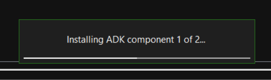Após a instalação, você pode continuar normalmente.
Você verá a seguinte janela:
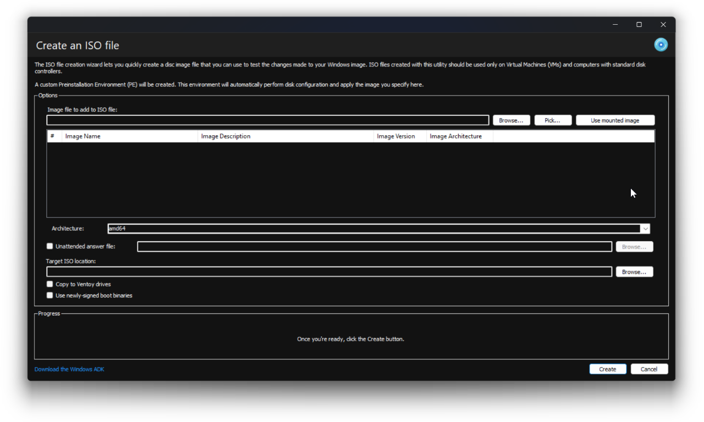Nesta janela, você deverá seguir estes passos
-
Escolha sua imagem do Windows. Você pode escolhê-la usando um dos 3 botões no topo:
- Procurar... permite especificar uma imagem do Windows em qualquer local
- Selecionar... permite escolher uma imagem entre todas as imagens montadas. Você verá uma lista da qual pode selecioná-la
- Usar imagem montada utilizará a imagem na qual você está trabalhando atualmente
- Escolha um destino para o seu arquivo ISO
- Clique em Criar. Observe que, se o arquivo ISO de destino existir, ele será sobrescrito; e que você precisa garantir que a imagem do Windows tenha todas as alterações salvas
Para resumir esses passos, aqui está uma imagem que os ilustra:
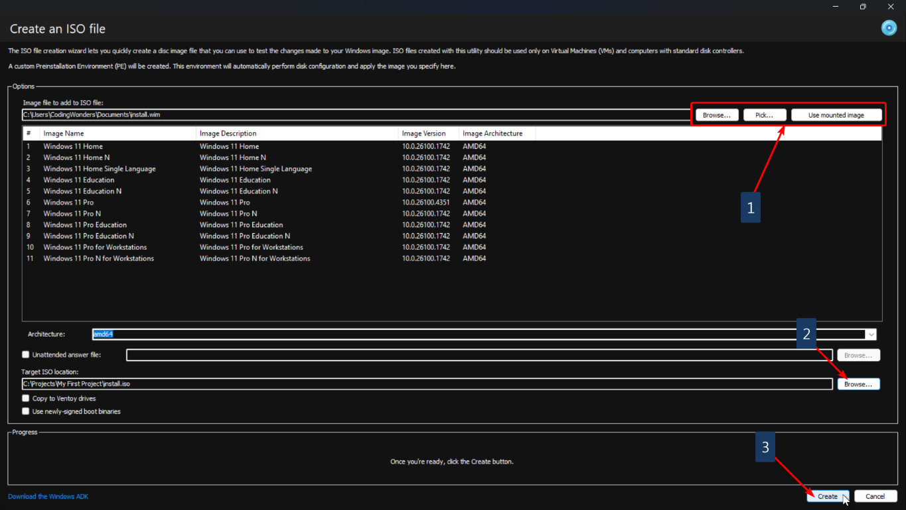Estes são os passos essenciais. Você pode configurar mais opções, como copiar para drives Ventoy, se desejar. Mas, neste exemplo, continuaremos com os padrões. Após clicar em OK, uma nova janela aparecerá. Essa janela criará o arquivo ISO que você poderá usar mais tarde:
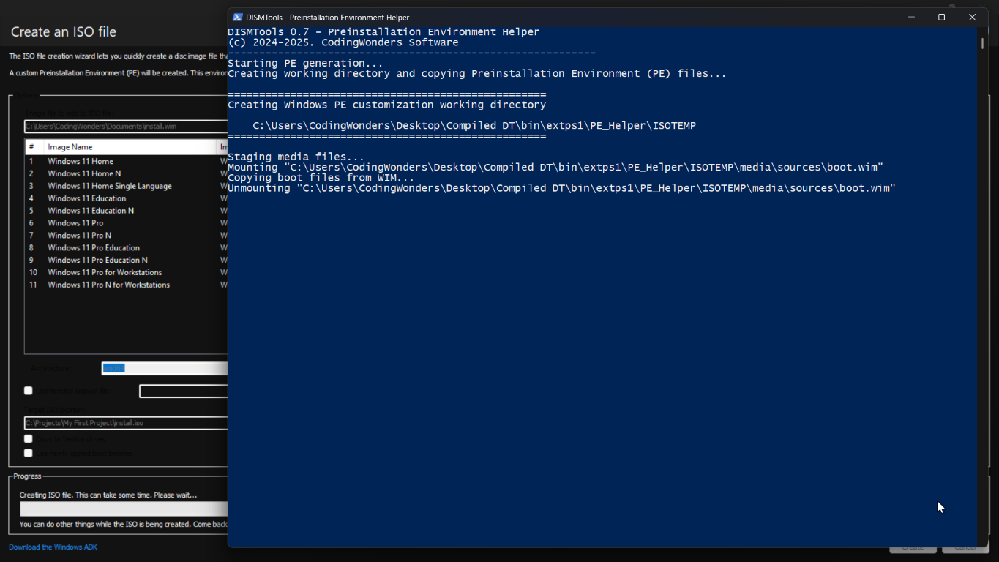Isso levará algum tempo, então fique à vontade para fazer outras coisas enquanto isso. Após a criação ser concluída, você poderá usar seu arquivo ISO. Você pode:
- Usar seu arquivo ISO em uma Máquina Virtual
- Gravá-lo em um drive USB com o Rufus
- Copiá-lo para um drive Ventoy
Prosseguiremos instalando o sistema operacional em uma máquina virtual.
Instalando o sistema alvo
Para isso, inicialize seu sistema a partir do ISO:
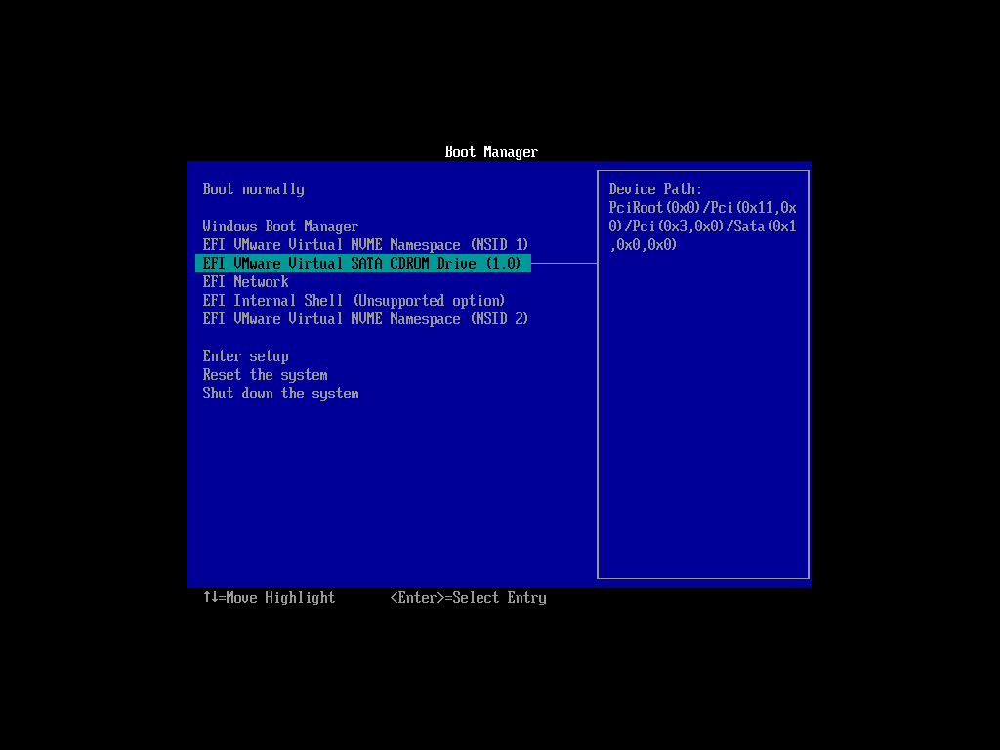Em seguida, siga os passos do assistente de instalação:
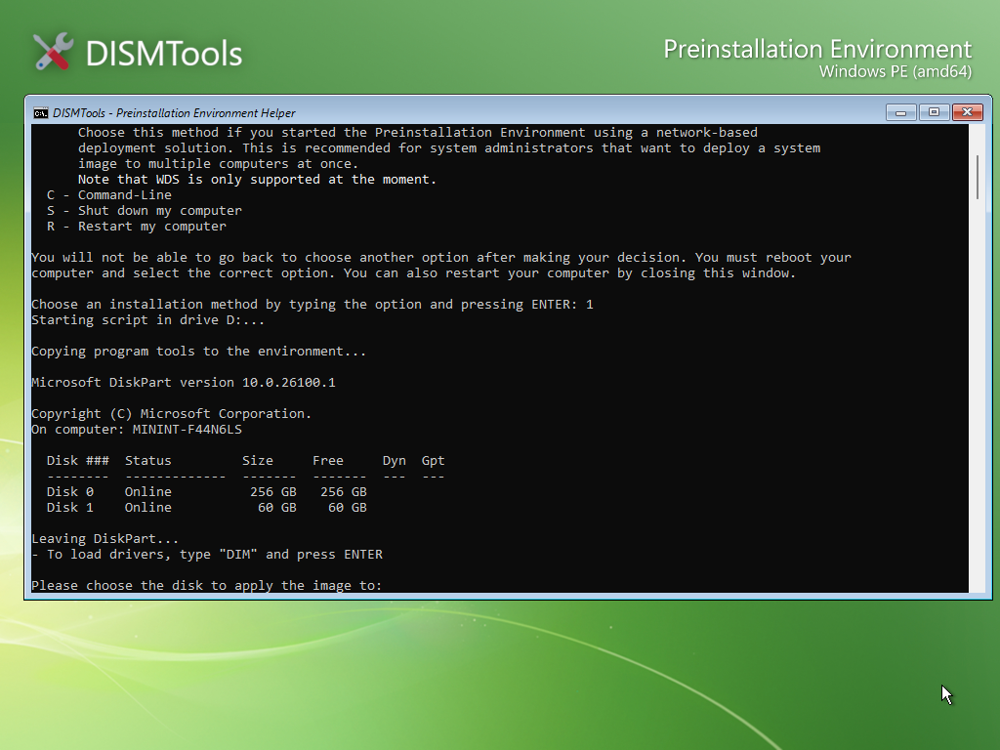Nota:
Escolha o disco ou volume de destino com cuidado, pois você pode excluir todos os seus arquivos nele. Além disso, observe o índice da imagem que você está modificando caso a imagem possua múltiplos índices.
Você deverá ter o sistema alvo pronto em breve. Isso levará algum tempo, dependendo da velocidade do seu computador. Estes são os resultados que você deve obter com sua imagem do Windows:
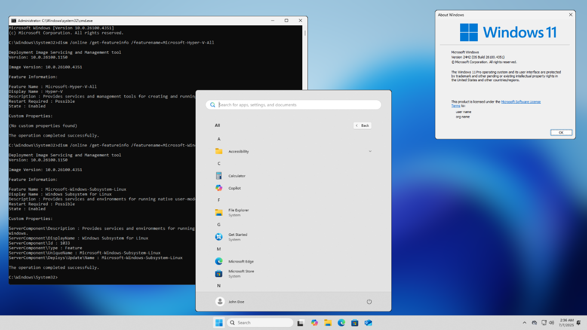Esta é uma imagem composta onde a única alteração é o papel de parede. Você ainda deve ver o restante das alterações.
Observações finais
Se você tiver um laboratório de computadores e quiser implantar esta imagem em vários computadores ao mesmo tempo, pode optar por realizar uma instalação baseada em rede. Embora este Tour não o cubra, você pode aprender como fazer isso consultando a documentação de Ajuda.
Nota:
O DISMTools suporta apenas o Windows Deployment Services no momento, e o guia na documentação de Ajuda foi desenhado para essa solução de implantação.
Parabéns! Você terminou o Tour
Você pode agora continuar personalizando e testando sua imagem do Windows, ou iniciar um novo projeto com uma nova imagem. As possibilidades são infinitas. Se você se perder ou quiser saber mais sobre o que o DISMTools oferece, não hesite em consultar a documentação de Ajuda. Você também pode abrir o Tour a qualquer momento.